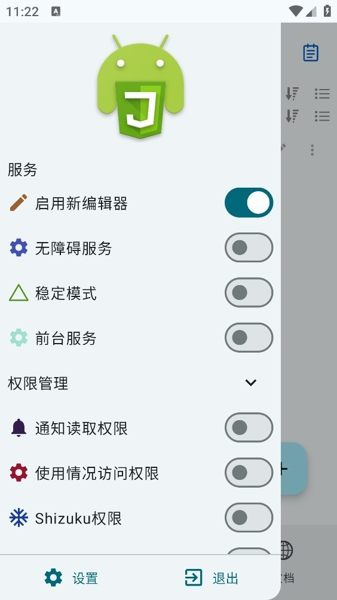

Autox.js 到底强在哪？和同类自动化工具的横向对比
在安卓自动化脚本引擎这个品类里，Autox.js 用 JavaScript + 无障碍服务的组合走出了一条不一样的路。用过按键精灵、Auto.js、Tasker 之后，我为什么最终留在了 Autox.js。
定位：安卓自动化脚本引擎里的异类
先说结论：在"安卓自动化"这个大筐里，Autox.js 属于"写点正经脚本"那一派。
这个品类大致分三档。最上面是 Tasker 这种老牌本地自动化之王——不靠无障碍服务、靠系统自身的触发器和动作框架，稳定但门槛极高，Tasker 的社区有一半帖子是"这段配置到底在干嘛"。中间层是 Auto.js 以及各种分支，JavaScript 脚本引擎的先行者，一度是国内用户最多的选择，但近几年几乎停更，生态半死不活。最底下是按键精灵、触动精灵这类"录制坐标 + 简单脚本"路线，面向普通用户，上手极快但脚本跨设备就废。
Autox.js官网瞄准的是中间偏上的空位：既保留 Auto.js 的 JavaScript 语法友好性，又在引擎底层做了大量工程化改进——从选择器体系、图像识别、IDE 体验到 ROM 兼容性，一套下来让写脚本这件事没那么"玩具"。
差异化：三个别家做不到的点
选择器 API 是真正可用的
同类工具的控件定位大多停在"text() + id()"两步走，遇到复杂界面就只能退到坐标。Autox.js 把这件事做成了一个体系：四种基础属性选择器（text()、id()、className()、desc()）各自有精确和模糊两个版本，链式组合可以叠加多个条件，还能从父容器里递归找子控件。
id("container").findOne().descendants().filter(c => c.className() === "Button") 这种写法在 Auto.js 里基本写不出来，在 Tasker 里要绕三层 Action。结果就是：你可以写出"无论这个 App 怎么改版都能跑"的脚本，而不是"只要坐标差两个像素就挂"的脆弱代码。
录制器不只是记坐标
悬浮窗录制功能是 Autox.js 被低估最多的特性。同类录制工具（包括按键精灵、Auto.js 早期版本）本质都是坐标录制：你点屏幕，它记 (x, y)，下次在同一个坐标再点一次。这种东西跨分辨率直接废，App 里加个弹窗坐标也偏了。
Autox.js 的录制器尽量生成基于控件属性的选择器代码。你点一下登录按钮，它优先生成 text("登录").findOne().click() 而不是 click(540, 1200)。找不到控件时才退化为坐标，而且录制完会给你一段可以手动改进的代码框架——把固定 sleep(2500) 换成 findOne(10000)，把坐标改成选择器，加 try-catch 包裹异常。对于"想快速上手又不想从零学"的用户来说，这个录制器是最好的入门导师。

7.2.3 版本：把长期欠的工程债一口气还了
任何一个成熟的脚本引擎都会遇到"截屏权限不弹""后台被系统杀""debug 模式内存泄漏"这类工程问题。Auto.js 在这上面卡了好几年没解决，社区抱怨声一片。去官方下载拿最新的 v7.2.3+ 版本，你会发现它把这一批历史问题打包修了：新增 Legacy 截屏方式（不跳出 App 直接授权）、修复 debug 模式 ResourceMonitor 的内存泄漏、加了前台服务通知让后台进程优先级更高。
这意味着什么？意味着你写的脚本终于不用"跑两小时就自己挂了"，意味着在 MIUI、ColorOS 这种激进杀后台的 ROM 上也能稳定过夜跑任务。对于想把脚本当真工具用而不是玩具的人来说，这一点比任何花哨功能都重要。
取舍：选择 Autox.js 需要接受的几件事
JavaScript 是门槛，但也是上限
Tasker 的配置是"可视化搭积木"，按键精灵是中文脚本，上手门槛比 JavaScript 低。Autox.js 要求你至少懂点基本语法——变量、函数、循环、异常处理。好处是 JavaScript 是全栈通用语言，你写脚本用到的 Array.prototype.filter、Promise、箭头函数这些知识在浏览器、Node.js、小程序里都能复用。门槛筛掉了只想"录一下跑一次"的用户，留下了愿意长期写脚本的人。
跨 ROM 适配永远躲不开
安卓生态的碎片化是所有自动化工具的噩梦。MIUI 的后台管理最严，要开自启动、后台弹出界面、锁屏清理白名单三道关；华为 HarmonyOS 要手动管理应用启动的三项权限；原生 Android 相对宽松但也有电池优化白名单。Autox.js 提供了详细的分 ROM 适配指南，但你还是得对照自己手机的系统一步步配——没有任何工具能帮你跳过这一步，这是安卓平台的硬伤，不是某个软件的问题——好在Autox.js文档里已经把各家 ROM 的配置步骤列得很细了，对着做就行。
游戏场景仍然是盲区
Autox.js 的核心依赖是无障碍服务暴露的控件树。大多数游戏引擎（Unity、Unreal、Cocos）都不暴露原生控件，所以 text()、id() 这些选择器完全派不上用场。这种场景只能走图像识别 + OpenCV 路线，而 Autox.js 的图像识别模块虽然能用，但和专业的游戏脚本工具相比差距明显。如果你的需求是"挂机打游戏"，Autox.js 不是最佳选择。
选购结论
什么样的人选 Autox.js？你需要在安卓设备上跑长期稳定的自动化任务，愿意花一两个周末学 JavaScript 基础，脚本可能涉及复杂的界面交互、条件判断、异常处理——比如自动签到、批量操作 App、定期爬取信息。这时候 Autox.js 的选择器体系、工程化质量、活跃社区会让你觉得值。
什么样的人选别的？如果你只是想"录一下点按钮跑一次"，按键精灵足够了；如果你的设备是小米/OPPO 以外的国产 ROM 又嫌配置麻烦，Auto.js 的老版本虽然停更但基础功能不差；如果你是游戏挂机党，直接找专业的游戏脚本引擎。
最后说一句：Autox.js 不是安卓自动化的银弹，但它是目前这个品类里最接近"正经开发工具"而不是"玩具"的选择。写过几段能稳定跑一周的脚本之后，你就明白为什么有些人从 Auto.js 和按键精灵迁过来之后就再也没回去过。相关的文档和资源我们同步放在三个仓库，GitHub 是主阵地，国内用户访问慢的话可以去 Gitee 或 GitCode 拿同一份资料。